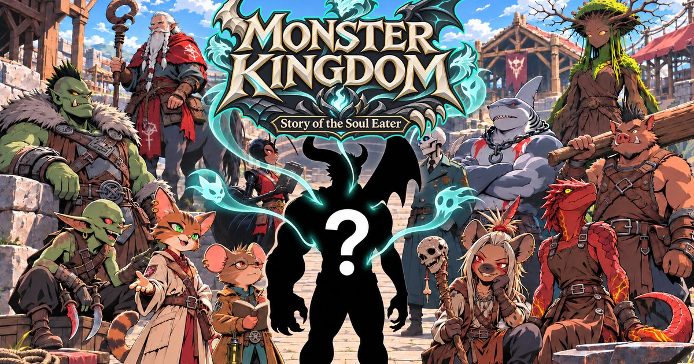
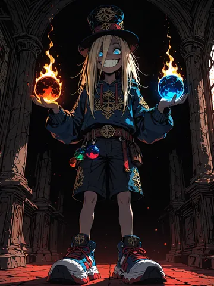

Act 05 · The Wildreach
Ladies, gentlemen, and that goblin eating the programme:
Monster Kingdom Lorebook
The Wildreach, monster country from coast to coast. In the middle sits the Basin, a bowl of broken farmland round the mouth of the Great Dungeon, and Delvers' Rest, the old adventurers' town the monsters took over when the humans stopped coming. Round it lie …


Step right up! Mind the hat.
The Wildreach, monster country from coast to coast. In the middle sits the Basin, a bowl of broken farmland round the mouth of the Great Dungeon, and Delvers' Rest, the old adventurers' town the monsters took over when the humans stopped coming. Round it lie the lands of the monster races: goblin hills to the north-west, the long grass of the herds to the east, the Deep Wood north-east, the Spine's mountains in the north, the Black Fen south-west, the Red Waste south-east, the Barrow Hills in the south and the Broken Coast on the eastern sea. Far to the west the Iron March is a line of empty human forts. Under the Basin the Great Dungeon goes down further than anyone has come back from.
- People
- Places
- Map
- Districts
- Factions
- Creatures
- Lore
- New player guide
- Quests
- What to say
- Character planner
- Abilities
- Traits
- Skills
- Items
- Story starts
- Game modes
- Music
The districts
- Greenhill
- The Astral Crown
- The Barrow Hills
- The Basin
- The Black Fen
- The Blossom Hills
- The Broken Coast
- The Celestial Seal
- The Deep Wood
- The Deepgreen
- The Elder Prison
- The Heart
- The Ice Coast
- The Iron March
- The Long Grass
- The Lost Human Kingdom
- The Lower Depths
- The Middle Depths
- The Primordial Covenant
- The Red Waste
- The Rimelands
- The Root Delta
- The Scattered Isles
- The Spine
- The Stair Falls
- The Upper Halls